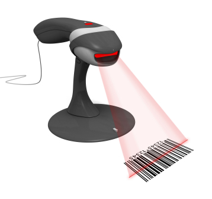

A quick tale about least known parameter of function that everyone knows
As always there were two approches:
As there were no agreement all browsers implements both models
Default is useCapture = false
When listener needs to process every event, example:
My own barcode scanner library
Thank You!